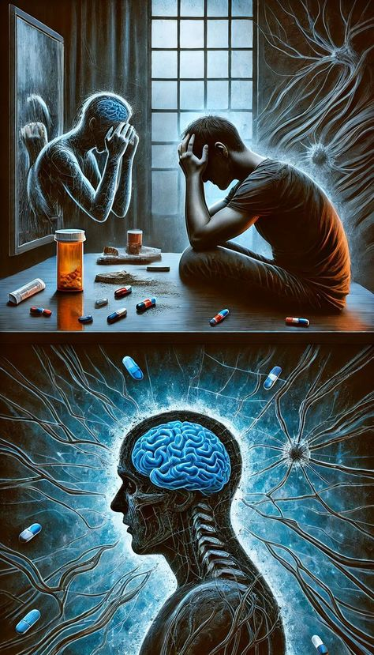

Függőségek

A dopamin az egyik legfontosabb neurotranszmitter az agyban, amely a jutalmazási és motivációs rendszerek működésében játszik központi szerepet. Ha egy tevékenység vagy anyag dopaminfelszabadulást idéz elő, az agy azt örömtelinek és jutalmazónak érzékeli, és arra ösztönöz, hogy megismételjük azt. Ezt a mechanizmust nevezik pozitív megerősítésnek, és ez felelős a függőségek kialakulásáért is.
A dopaminszint mesterséges vagy akaratlanul történő befolyásolása rendkívül veszélyes lehet, hiszen a dopamin az a hormonja a testünknek, amely irányító szereppel bír az egész vágyrendszerünk és motivációnk felett. Hihetetlennek, tűnhet, hogy egy ilyen kis mikroszkópikus részecske életeket tehet tönkre, ezért rendkívül fontos, hogy nagy figyelmet szenteljünk önmagunk tudatos irányítására és ne engedjük magunkat bizonyos csábítások csapdájába ejteni. Tudatos életmóddal és rendszerezett életvitellel minden megelőzhető, de ha átadjuk magunkat a csábításnak nehéz lehet a visszaút a kiegyensúlyozott élet felé.
Most lássuk a leggyakrabban előforduló függőségek listáját, amelyek mind a dopaminrendszer működésével állnak szoros kapcsolatban.
Kémiai függőségek és a dopamin szerepe
Különböző drogok és kémiai anyagok befolyásolják az agy dopaminrendszerét, és ez vezet az addikció kialakulásához.
Drogfüggőség
A kábítószerek közvetlenül vagy közvetve hatnak a dopaminfelszabadulásra, ami eufóriát, örömérzetet és fokozott motivációt eredményez. Azonban az ismételt használat során az agy hozzászokik ehhez a mesterséges dopaminlökethez, és egyre nagyobb adagokra lesz szükség ugyanolyan hatás eléréséhez.
- Kokain: Gátolja a dopamin visszavételét a neuronokba, így hosszabb ideig marad magas szinten az agyban, ami eufóriát okoz. Azonban a szervezet egy idő után kevésbé érzékeny a dopaminra, ami fokozza a függőség kialakulását.
- Amfetaminok (pl. metamfetamin): Serkentik a dopamintermelést, de hosszú távon kimerítik a készleteket, ami depressziót és motivációs zavarokat eredményez.
- Heroin és opioidok: Bár főként az endorfinrendszert érintik, közvetetten serkentik a dopaminfelszabadulást is, erős eufóriát okozva.
- Nikotin: A dohányzás hatására a nikotin serkenti a dopaminfelszabadulást, ami hozzájárul a függőség kialakulásához.
Alkoholizmus
Az alkohol befolyásolja a GABA és glutamát neurotranszmitterek működését, de közvetetten serkenti a dopamin felszabadulását is. Ezért az emberek gyakran az öröm és ellazulás érzéséért fogyasztanak alkoholt. Hosszú távon azonban az alkohol csökkenti a természetes dopaminszintet, így egyre több alkoholra van szükség a kívánt hatás eléréséhez.
Cukorfüggőség
A cukor szintén serkenti a dopaminfelszabadulást, hasonlóan a drogokhoz. Ez az oka annak, hogy az emberek gyakran vágyakoznak az édes ételek után, és hajlamosak túlzásba vinni a fogyasztásukat. A magas cukorfogyasztás hosszú távon hozzájárulhat az elhízáshoz és az inzulinrezisztencia kialakulásához.
Viselkedési függőségek és a dopamin hatása
Nemcsak kémiai anyagok, hanem bizonyos viselkedések is túlzott dopaminfelszabadulást idézhetnek elő, ami szintén függőséghez vezethet.
Játékszenvedély (szerencsejáték-függőség)
A szerencsejátékok során a nyerés és vesztés ciklikusan váltakozik, és minden alkalommal, amikor egy szerencsejátékos nyer, az agy nagy mennyiségű dopamint szabadít fel. Ez a jutalommechanizmus arra ösztönzi a játékosokat, hogy tovább játszanak, még akkor is, ha a veszteségeik egyre nagyobbak.
A szerencsejátékok során a nyerés és vesztés ciklikusan váltakozik, és minden alkalommal, amikor egy szerencsejátékos nyer, az agy nagy mennyiségű dopamint szabadít fel. Ez a jutalommechanizmus arra ösztönzi a játékosokat, hogy tovább játszanak, még akkor is, ha a veszteségeik egyre nagyobbak.
Okostelefon- és közösségimédia-függőség
A közösségi média és az okostelefonok használata során az értesítések, lájkok és új bejegyzések mind-mind dopaminfelszabadulást eredményeznek. Ez hasonló a szerencsejátékhoz: az agy jutalomként érzékeli az új információt, és folyamatosan keresni kezdi.
Az algoritmusok úgy vannak kialakítva, hogy maximalizálják a dopaminlöketeket, ezért az emberek gyakran órákat töltenek az alkalmazások böngészésével. A folyamatos elérhetőség és információáramlás csökkentheti a figyelmet és növelheti a szorongást.
Evészavarok és ételfüggőség
Az ízletes, magas cukor- és zsírtartalmú ételek jelentős dopaminfelszabadulást okoznak, ami miatt az emberek gyakran túleszik magukat. Az elhízásban szenvedő emberek agyában gyakran kevesebb dopaminreceptor található, ami arra utal, hogy a nagyobb ételmennyiség fogyasztása kompenzációs mechanizmus lehet.
Egyéb függőségek
Edzésfüggőség
A testmozgás közben felszabaduló dopamin és endorfinok eufóriát és jó közérzetet eredményeznek. Bár az edzés egészséges, egyesek túlzásba vihetik, és edzésfüggőség alakulhat ki. A túlzott edzés fokozott stresszt és fizikai károsodást okozhat, miközben a természetes dopamintermelést is befolyásolja.
Munkamánia
A sikerélmény és a teljesítmény növeli a dopaminszintet, ami miatt egyesek kényszeresen túl sok időt töltenek a munkájukkal.
Shopaholizmus (vásárlási függőség)
Az új tárgyak vásárlása szintén dopaminfelszabadulással jár. Azonban ez az örömérzet rövid ideig tart, így az emberek gyakran újabb és újabb dolgokat vásárolnak a kívánt élmény fenntartása érdekében.